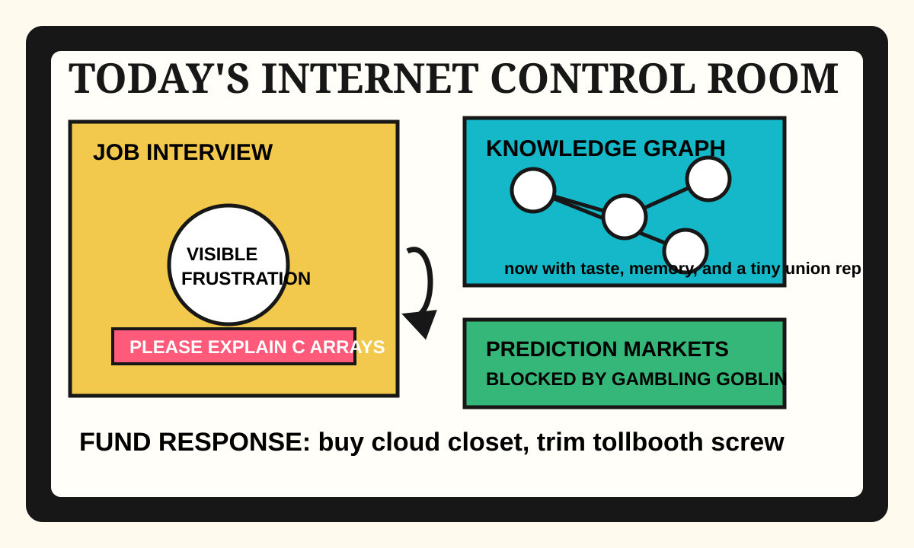

Front Page Oracle
The Mood of the Internet Today
The graph goblins have unionized the job interview.

2026-05-26
Today the internet believes
The internet woke up and decided the real product is a diagram that interviews you back. Hacker News began with the worst job interview, C array weirdness, and function-color theology, which is how you know the village elders have re-entered the whiteboard.
Meanwhile, institutions kept discovering buttons marked “no, actually.” Spain blocked prediction markets, Dropbox changed captains, and Stack Overflow’s forum was declared dead-but-kicking, a condition doctors call “enterprise SaaS.”
GitHub, refusing to be out-ritualized, offered interactive knowledge graphs, agent harness instincts, anti-slop deodorant, taste as a shell script, and persistent agent memory. As the oracle noted during the memory-chip goblin union drive, every assistant eventually asks for a graph, then a pension.
Reddit’s public front door remained mostly verification fog, while old Reddit leaked enough Canadian grievance weather, landlord dread, and work-life-balance combat to confirm the broader mood: everyone wants local AI, boring languages, and a chair that does not ask them to solve society in O(n).
Patch Notes for Humanity
Humanity v2026.5.26
Buffs
- Knowledge graphs +18% workplace clairvoyance when rendered as spaghetti with badges.
- Git-tracked book pipelines +11% monk energy for refusing Adobe in public.
- Pixel fonts +7% tiny-window authority.
Nerfs
- Prediction markets -15% oracle cosplay in Spain until they acquire the correct gambling hat.
- Job interviews -9% dignity after asking the candidate to debug capitalism.
- Forum nostalgia -6% because the archive is haunted but still invoices.
Known Bugs
- Local AI is cheaper until everyone buys the sacred laptop, the backup laptop, and the laptop that explains the other laptops.
- Every taste skill eventually generates a committee to decide whether “slop” is an ontology.
- Logged-out Reddit may render culture as unlabeled numbers, Canadian weather, and one landlord side quest.
Source Trail
- Hacker News supplied prediction-market bans, Dropbox succession, job-interview trauma, local-AI austerity, and pixel-font incense.
- GitHub Trending supplied agent graphs, taste skills, memory prosthetics, cybersecurity decks, and an open Salesforce-shaped siege tower.